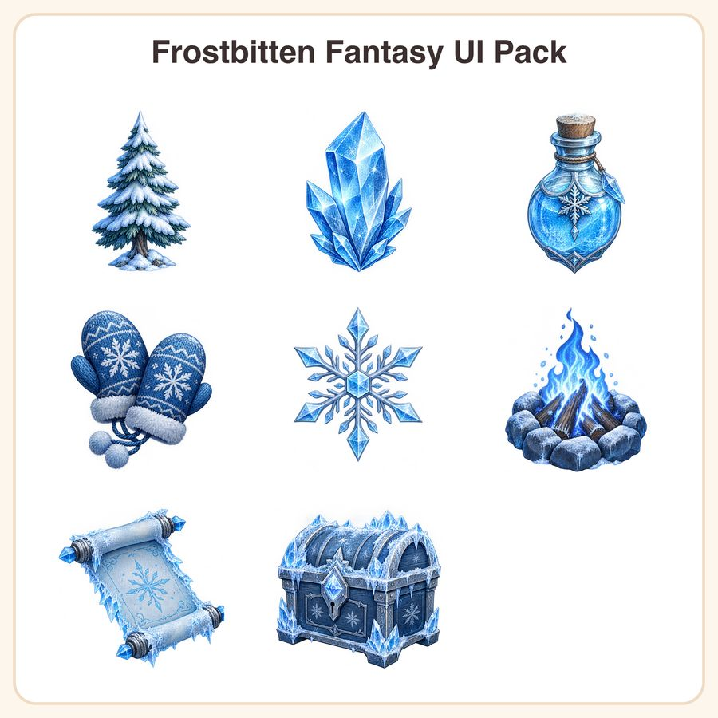

$7.99
Buy nowGet it on itch.ioView on EtsyDive into a world of magic and snow with this versatile UI pack, designed specially for indie game developers crafting frosty adventures or enchanted winter quests. What's Included: - 1 Snowy Pine Tree Icon - 1 Glittering Ice Crystal - 1 Frozen Potion Bottle - 1 Pair of Warm Mittens - 1 Delicate Snowflake - 1 Cozy Campfire - 1 Magical Scroll with Frost Edges - 1 Ice-Encrusted Treasure Chest File Formats & Sizes: - 1024px transparent PNGs files for crisp scaling - 1024px + 1024px + 512px PNGs files with transparent backgrounds How to Use: Perfect for game UI elements, inventory icons, or environment decoration. Easily integrate these assets into your game's interface or design layered scenes with versatile use across game engines. License: This purchase includes a personal and small-business commercial license, allowing up to 500 units sold. Files may not be resold or redistributed. Disclosure: These designs were thoughtfully created by our shop with the assistance of AI tools, ensuring unique and polished assets for your projects.